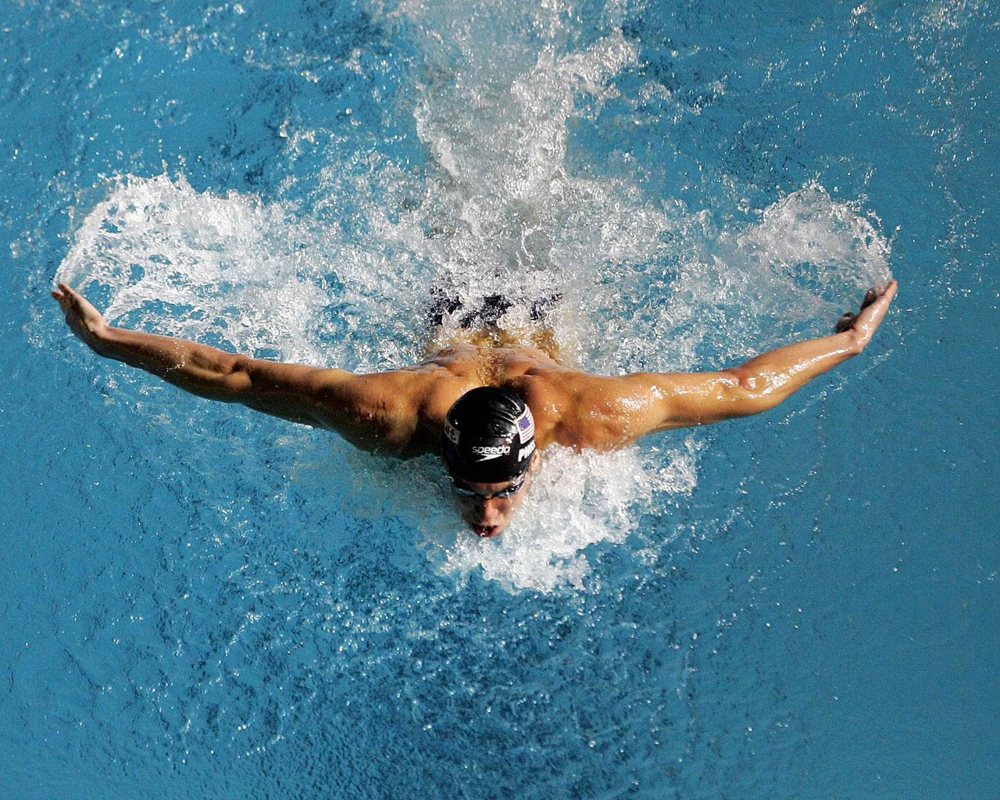

Entrenamiento de fuerza.
Es una forma de ejercicio que utiliza cargas externas para mejorar la capacidad del cuerpo para producir fuerza y resistencia muscular. Hay diferentes formas de entrenamiento de fuerza y cada una tiene sus propias ventajas y desventajas. Es importante realizar el entrenamiento de forma progresiva, con la técnica adecuada y complementarlo con una dieta adecuada y suficiente descanso.

Clases de natación.
La natación es un deporte acuático que se enfoca en la natación y la respiración sincronizada para mejorar la salud cardiovascular, la resistencia muscular, la flexibilidad y la coordinación. La natación se puede practicar en diferentes estilos y es una forma de ejercicio de bajo impacto que es adecuada para personas de todas las edades y niveles de habilidad.
